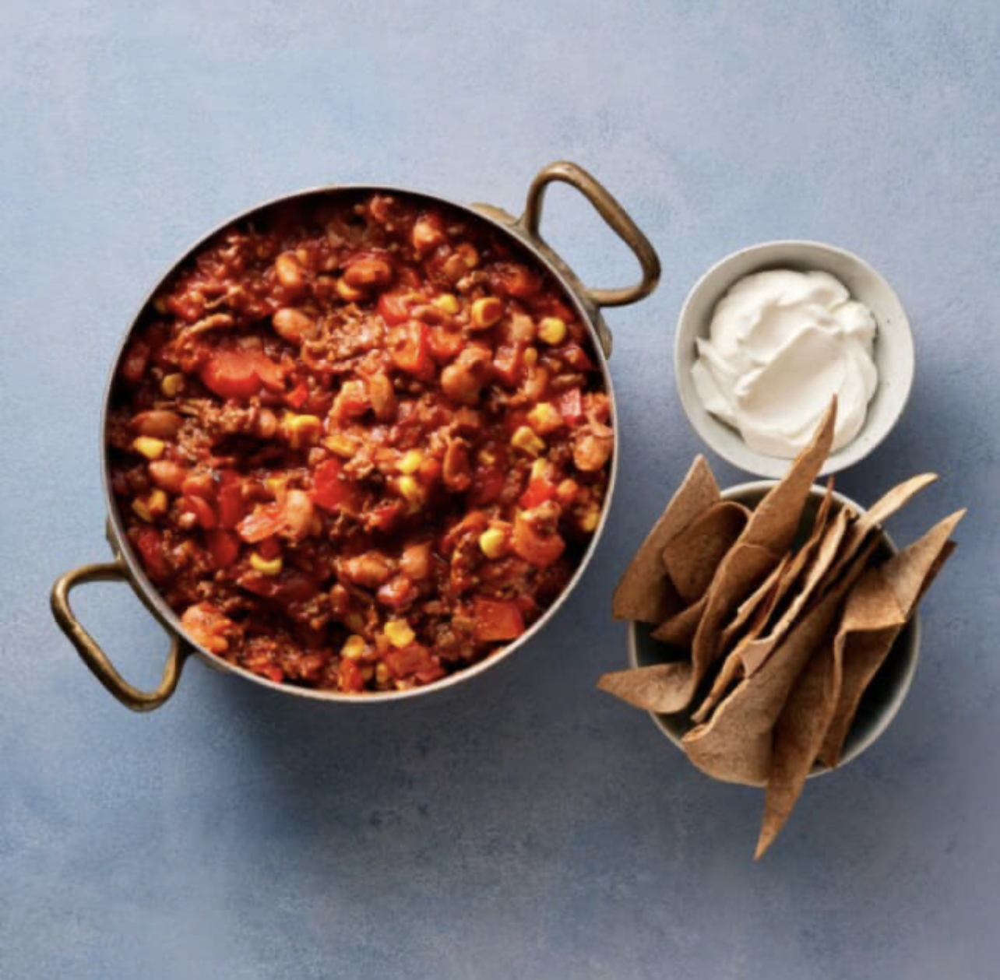

Creamy Chicken Casserole

Description
Find the recipe below!
20 minutes preparation
Serves 4
Ingredients
- 2 onions
- 2 peppers
- 1 tbsp olive oil
- 500g ground beef
- 2 tbsp spice blend for chili con carne
- 300g sweet corn
- 400g kidney beans (tinned)
- 4 tortillas
- 4 tbsp Greek style yoghurt
- 500g sieved tomatoes
Steps
- Preheat tne oven to 200C. Line a baking tray with baking paper. Chop the onions. Cut the peppers into cubes.
- Heat the oil in a frying pan and fry the minced meat for 4 minutes. Add the spice blend, onion and bell pepper. Bake for 3 minutes.
- Add the beans and corn along with the sieved tomatoes. Let it cook for 10 minutes on low heat.
- In the meantime, cut the tortillas into small pieces, divide them on the baking tray and bake them in the oven for 10 minutes until crisp.
- Divide the chili con carne among 4 bowls. Divide the tortilla dots between the bowls and spoon 1 tbsp yogurt on each portion.
Return to main page